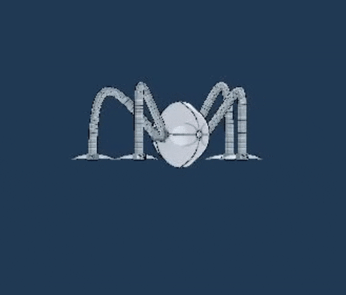
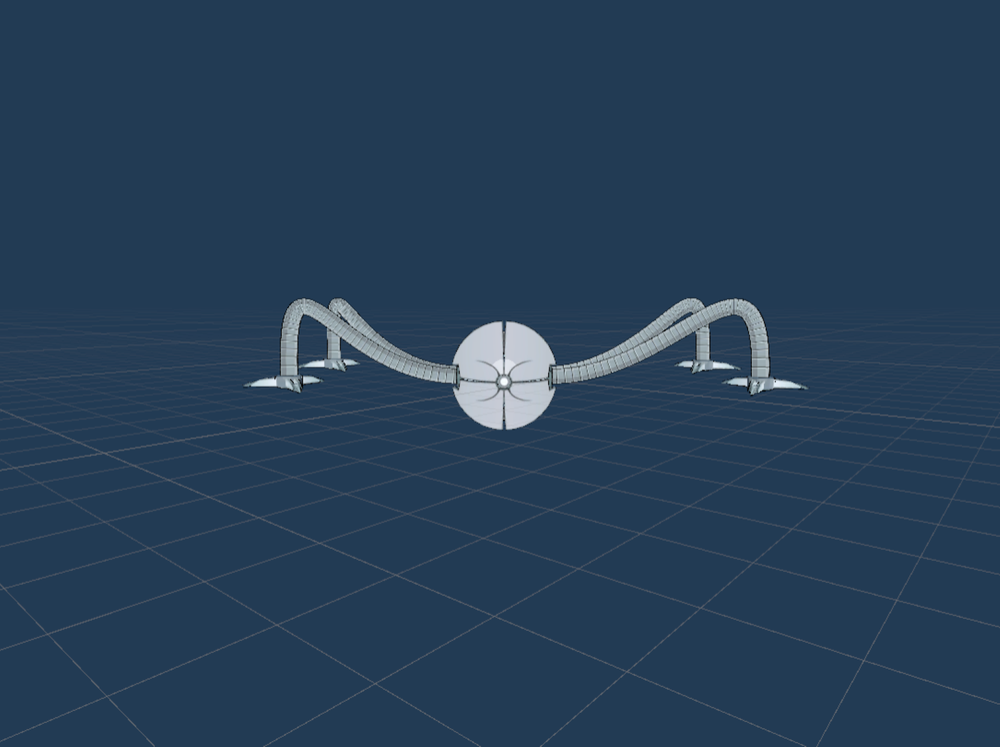
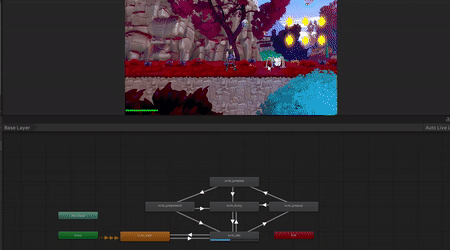
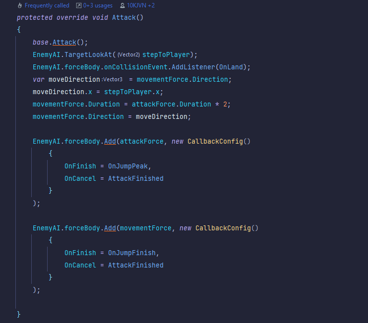
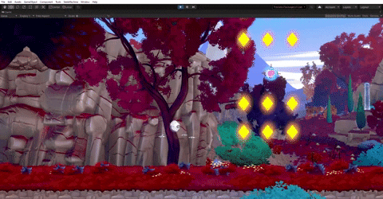

Project Overview
This project was made for the hybrid learning environment at Neon Origins
Concept & Planning
I worked on this together with my Co-Worker Jahvairo Monkau. We first went through a brainstorming session on what enemy we were going to make. One of our teachers came up to us and told us to use one of his old models, which was the Octo Monster. We then designed the attacks and came up with behavioral patterns for the enemy.
System Breakdown
In order for us to start developing, we first had to looking to their ForceSystem. Almost all of their movement related systems relied on it. We used pair-programming to lessen the workload on each other and get a smooth collaboration. He was in charge of linking the animations to the AI, while I was in charge of the code and 2 every 1-2 hours we would swap roles. To debug the animations we used input.GetKeyDown to trigger the animations and see if they worked properly. once we were sure the animations were fine we went over to the debugging of the enemyAI.

Animations

Model View
Statemachine Breakdown
Patrol and detection systems already existed in the codebase for flying enemies. Together with the other dev, I refactored and extended this logic to support Octo as the first ground-based enemy. Through pair programming, we adapted pathfinding and detection behavior, so it could handle grounded patrol routes reliably. The Animator triggers with the enemy's state machine, making sure Octo’s Idle, Walk, Jump, Attack, and Fuzzy states transitioned smoothly. Unity Events were used to time animation transitions such as JumpUp → JumpTop → JumpAttack.

Attacking State

Jump Attack script
Technical Challenges
I personally struggled with learning their forcesystem, it was alot of back and forth on how certain variables were supposed to work, but one of the technical directors Berend Weij was really helpful with helping me understand the way it worked. Air Enemy was als a little bit difficult to refactor to EnemyAI, but once we figured out how the ForceSystem worked it wasnt as difficult
Simple Product Showcase

Octo Attacking Gif